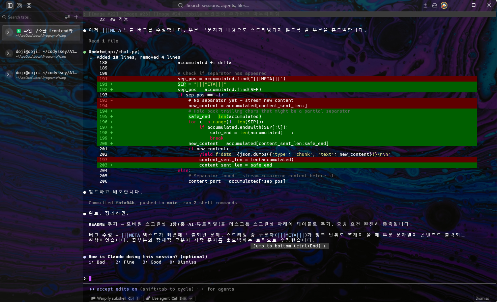

Synth Agent v1 · 기술 해설
Teenage Engineering 장비 AI 가이드 Synth Agent를 만들며 적용한 기술을 6가지 핵심 개념으로 정리합니다.
웹 서비스를 만들기 전에 서비스 기획서를 먼저 작성합니다. 기획서는 "무엇을 왜 만드는가"를 정의하고, 개발 방향을 결정합니다.
기획이 정해지면 세 가지 언어가 각자 역할을 담당합니다.
"무엇이 있는가"를 정의합니다. Synth Agent에서 입력창(<input>), 전송 버튼(<button>), 채팅 목록 컨테이너(<div id="conversation">)가 HTML로 만들어집니다.
"어떻게 보이는가"를 정의합니다. 베이지 배경(#f5f4f2), 오렌지 강조(#f97316), 둥근 버블, 스켈레톤 로딩 애니메이션이 CSS입니다. React 버전은 Tailwind CSS를 사용했습니다.
"어떻게 반응하는가"를 정의합니다. 버튼 클릭 → API 호출 → 스트리밍 텍스트를 DOM에 추가하는 모든 로직이 JavaScript입니다. React도 JavaScript입니다.
세 언어는 협력합니다. HTML이 뼈대를 만들면, CSS가 옷을 입히고, JavaScript가 생명을 불어넣습니다.
사용자가 "샘플은 어떻게 녹음하나요?"를 입력하고 전송 버튼을 누르면 아래 흐름이 일어납니다.
핵심은 SSE(Server-Sent Events)입니다. 일반 fetch는 응답이 완성될 때까지 기다립니다. SSE는 서버가 데이터를 청크 단위로 보내고, JavaScript가 도착할 때마다 화면을 업데이트합니다. 타자를 치는 것처럼 텍스트가 실시간으로 나타나는 효과입니다.
html/app.js — SSE 스트리밍 수신 코드// 1. fetch로 POST 요청 (스트리밍 응답 받기) const res = await fetch('/api/chat', { method: 'POST', headers: { 'Content-Type': 'application/json' }, body: JSON.stringify({ messages, deviceSlug }) }); // 2. ReadableStream으로 청크 단위 읽기 const reader = res.body.getReader(); while (true) { const { done, value } = await reader.read(); if (done) break; // 3. SSE 이벤트 파싱 → 화면 업데이트 const evt = JSON.parse(line.slice(6)); if (evt.type === 'chunk') { appendText(evt.text); // ← DOM 즉시 업데이트 } }
서버리스(Serverless)는 "서버가 없다"는 뜻이 아닙니다. 서버를 직접 관리하지 않아도 된다는 뜻입니다. 요청이 오면 Vercel이 자동으로 함수를 실행하고, 끝나면 종료합니다.
서버를 항상 켜두어야 합니다. 트래픽이 없어도 비용이 발생하고, 직접 관리해야 합니다.
요청이 올 때만 실행됩니다. Synth Agent는 /api/chat에 POST가 오면 Python 함수가 실행되고, 응답 후 종료됩니다.
Synth Agent의 파일 구조가 이 구조를 그대로 반영합니다.
프로젝트 구조3_synth_agent/ ├── api/ ← 백엔드 (Python) │ ├── __init__.py ← Vercel이 모듈로 인식하게 하는 파일 │ └── chat.py ← /api/chat 엔드포인트 (Flask 앱) │ ├── frontend/ ← 프론트엔드 (React + Vite) │ └── src/ │ └── components/ │ └── AiView.tsx ← fetch로 /api/chat 호출 │ └── vercel.json ← Vercel 빌드 설정 pyproject.toml ← Python 의존성 + 진입점 설정
프론트엔드(React)는 fetch('/api/chat')를 호출합니다. 같은 도메인 내 경로이므로 CORS 문제가 없습니다. Vercel이 /api/* 경로를 자동으로 Python 함수로 라우팅합니다.
from flask import Flask, request, Response, stream_with_context app = Flask(__name__) ← Vercel이 이 app 객체를 서버리스 함수로 실행 @app.route("/api/chat", methods=["POST"]) def chat(): # OpenRouter AI API 호출 → SSE 스트리밍 응답 return Response( stream_with_context(generate()), content_type="text/event-stream" )
Synth Agent는 OpenRouter API를 사용합니다. 이 API는 유료이고, 키를 가진 사람은 누구든 요금을 청구할 수 있습니다. 키를 코드에 직접 쓰면 어떤 일이 생길까요?
# 이렇게 하면 GitHub에 올라간 순간 키가 노출됩니다 API_KEY = "sk-or-v1-REDACTED_EXAMPLE..." ← 절대 안 됨
# api/chat.py — 환경 변수에서 읽기 import os API_KEY = os.environ.get("OPENROUTER_API_KEY", "") # .env (로컬 개발용, .gitignore에 추가됨) OPENROUTER_API_KEY=sk-or-v1-REDACTED_EXAMPLE... # .gitignore .env .env.local
| 환경 | 키 저장 위치 | 방법 |
|---|---|---|
| 로컬 개발 | .env 파일 |
프로젝트 루트에 파일 생성. Git에는 올리지 않음 |
| Vercel 배포 | Vercel 대시보드 | Settings → Environment Variables에 등록. 빌드/런타임에 자동 주입 |
환경 변수는 코드 밖에 존재합니다. 코드를 GitHub에 공개해도 키는 안전합니다. 팀원이 늘어도 각자 자신의 키를 설정하면 됩니다.
로컬 환경은 내 컴퓨터입니다. 배포 환경은 Vercel 서버입니다. 같은 코드지만 환경이 다르기 때문에 로컬에서 잘 되던 것이 배포 후 안 되는 경우가 생깁니다.
npx vercel dev로 실행. Python 백엔드 + Vite 프록시가 함께 동작. localhost:3000에서 확인.
npx vercel --prod로 배포. Vercel 서버에서 빌드 후 CDN에 배포. synth-agent.vercel.app에서 접근.
Synth Agent를 만들면서 실제로 겪은 오류들과 해결 과정입니다.
npm not found — Vercel의 Python 환경에 npm이 없어 프론트엔드 빌드 실패
vercel.json에 buildCommand를 별도로 지정해 npm 빌드를 Python 환경과 분리
No python entrypoint found — Vercel이 Flask 앱 위치를 찾지 못함
pyproject.toml에 [tool.vercel] entrypoint = "api.chat:app" 추가 + api/__init__.py 생성
Status 0, 6ms — 함수가 실행되자마자 종료. 모듈 import 실패가 원인
flask-cors import 제거, @app.after_request 핸들러로 CORS 직접 처리
수정 후 재배포 흐름은 항상 같습니다.
수정 → 재배포 사이클# 1. 코드 수정 후 로컬 확인 npx vercel dev # 2. Git commit & push git add . git commit -m "fix: |||META leak in streaming" git push # 3. 프로덕션 배포 npx vercel --prod # 4. 배포 URL에서 확인 https://synth-agent.vercel.app
Synth Agent는 Claude Code를 사용해 개발했습니다. AI가 코드를 생성하지만, 오류가 났을 때 원인을 이해하고 수정 방향을 지시하는 것은 사람의 몫입니다.

|||META 버그를 발견하고 api/chat.py를 수정하는 과정. 초록 라인이 추가된 코드, 빨간 라인이 제거된 코드입니다.이 스크린샷에서 수정된 버그를 예시로 살펴보겠습니다.
|||META 텍스트가 그대로 표시됨|||META|||{...} 형식으로 메타데이터를 붙입니다. Python 서버는 |||META|||를 기준으로 내용과 메타데이터를 분리해야 합니다. 그런데 스트리밍 중 |||META|||가 ||| + META + |||처럼 여러 청크로 나뉘어 도착하면, 분리 기준을 아직 발견하지 못한 상태에서 |||META를 일반 텍스트로 화면에 출력해버렸습니다.SEP = "|||META|||" sep_pos = accumulated.find(SEP) if sep_pos == -1: # 구분자 미발견 — 끝 부분이 구분자 시작일 수 있으므로 보류 safe_end = len(accumulated) for i in range(1, len(SEP)): if accumulated.endswith(SEP[:i]): safe_end = len(accumulated) - i ← 여기까지만 전송 break new_content = accumulated[content_sent_len:safe_end]
AI가 이 코드를 생성했지만, "왜 이 버그가 생겼는가"를 이해한 사람이 올바른 수정 방향을 알려줄 수 있었습니다. AI 코딩 도구는 구현 속도를 높여주지만, 문제를 진단하는 사고는 개발자가 합니다.
| AI가 잘하는 것 | 사람이 해야 하는 것 |
|---|---|
| 보일러플레이트 코드 작성 | 서비스 목적과 사용자 요구 정의 |
| 패턴 기반 구현 (SSE, fetch 등) | 오류 원인 파악 및 수정 방향 지시 |
| 다양한 옵션 빠르게 제시 | 최종 선택 및 트레이드오프 결정 |
| 문서화, README 작성 | 실제 사용 테스트 및 피드백 |